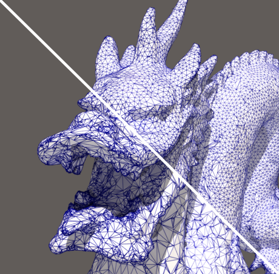
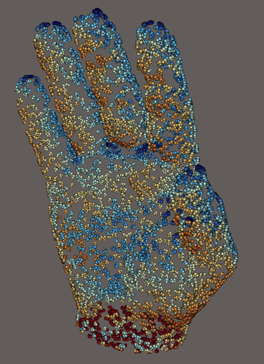
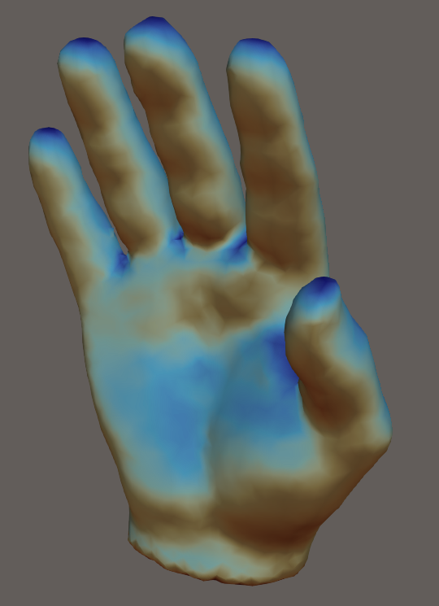
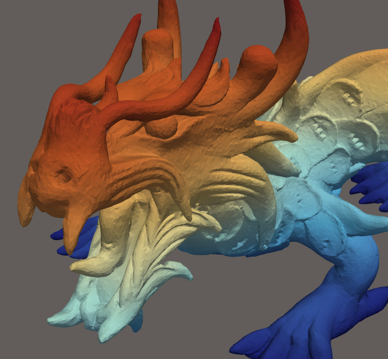
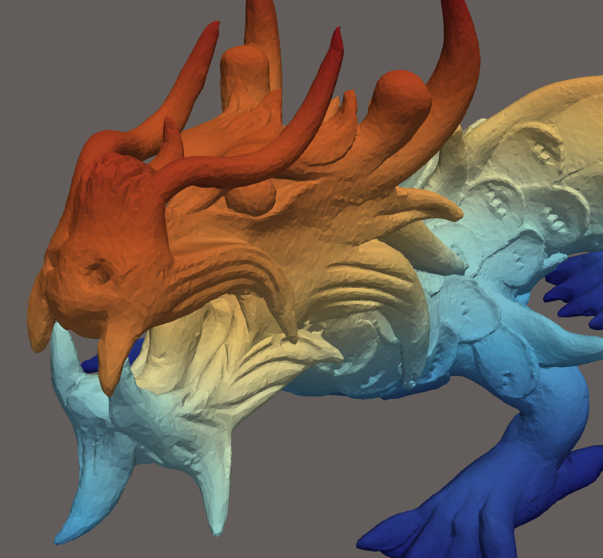

vespa is an R package providing bindings to the VESPA C++/VTK/CGAL mesh processing library. It exposes CGAL geometry and surface processing algorithms as R functions operating on mesh3d objects (package rgl).

Isotropic remeshing of a surface mesh
library(vespa)
mesh <- read_stl(system.file("extdata", "torus.stl", package = "vespa"))
remesh <- isotropic_remeshing(mesh, target_length = 0.1, n_iterations = 3L)
rgl::shade3d(remesh, col = "steelblue")

Surface reconstruction from a point cloud (input cloud / reconstructed mesh)
library(vespa)
pts <- read_points_xyz(system.file("testdata", "test_points.xyz",
package = "vespa"))
pts <- pca_estimate_normals(pts, n_neighbors = 18L, orient = TRUE)
recon <- poisson_reconstruction(pts)
rgl::shade3d(recon, col = "tomato")

As-Rigid-As-Possible mesh deformation (original / deformed)
library(vespa)
mesh <- read_stl(system.file("extdata", "torus.stl", package = "vespa"))
n <- ncol(mesh$vb)
fixed <- which(mesh$vb[3, ] < -0.25) # bottom ring — fixed handles
moved <- which(mesh$vb[3, ] > 0.25) # top ring — pulled up
target <- mesh$vb[1:3, moved, drop = FALSE]
target[3, ] <- target[3, ] + 0.4 # translate +0.4 along Z
deformed <- mesh_deformation(mesh,
control_ids = c(fixed, moved),
target_coords = cbind(mesh$vb[1:3, fixed], target),
roi_ids = seq_len(n))
rgl::shade3d(deformed, col = "goldenrod")Installation
Prerequisites
The VESPA C++ library requires VTK >= 9.0 and CGAL >= 5.3. and Ceres. You must install them with your software package manager.
C++ package installation
Installation of VESPA C++ library shall follow Vespa Installation Documentation. We will rely on VESPA being installed in the path CMAKE_INSTALL_PREFIX environemnt variable
R package installation
As soon as VESPA installation path is in the environemnt variable CMAKE_INSTALL_PREFIX, then we can provide it to the installation script :
# install.packages("remotes")
remotes::install.github("cregouby/vespa", configure.vars = "VESPA_ROOT=$CMAKE_INSTALL_PREFIX")or from a terminal
cd vespa
export VESPA_ROOT=$CMAKE_INSTALL_PREFIX
R CMD INSTALL .Usage notes
All filters expect a triangulated, watertight, 2-manifold surface represented as a mesh3d object. Use mesh_check() to diagnose topological issues and alpha_wrapping() to repair a mesh that is not watertight or 2-manifold.
License
This package is distributed under a BSD-3 license. Because it links to CGAL, any binary built from it retains the GPLv3 license unless you hold a commercial license from GeometryFactory.